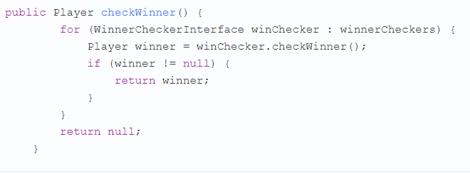
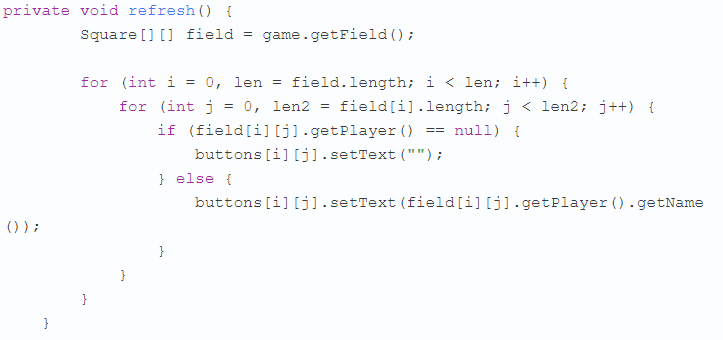

Создание мобильного приложения на "Python"
В наши дни каждый разработчик может столкнуться с необходимостью работы над мобильным или
веб-приложением на Python. В Python нет встроенных инструментов для мобильных устройств, тем не менее существуют пакеты, которые можно использовать для создания мобильных приложений. Это Kivy, PyQt и даже библиотека Toga от Beeware.Принципы работы фреймворка Kivy
Python
Kivy был создан в 2011 году. Данный кросс-платформенный
фреймворк Python работает на Windows, Mac, Linux и Raspberry Pi. В дополнение к
стандартному вводу через клавиатуру и мышь он поддерживает мультитач.
Kivy даже поддерживает ускорение GPU своей графики, что во многом является
следствием использования OpenGL ES2. У проекта есть лицензия MIT, поэтому
библиотеку можно использовать бесплатно и вкупе с коммерческим программным
обеспечением. Во время разработки приложения через Kivy создается интуитивно
понятный интерфейс (Natural user
Interface), или NUI. Его главная идея в том, чтобы
пользователь мог легко и быстро приспособиться к программному обеспечению без
чтения инструкций. Kivy не задействует нативные элементы управления, или
виджеты. Все его виджеты настраиваются. Это значит, что приложения Kivy будут
выглядеть одинаково на всех платформах. Тем не менее, это также предполагает,
что внешний вид вашего приложения будет отличаться от нативных приложений
пользователя. Это может стать как преимуществом, так и недостатком, все зависит
от аудитории.
Установка Kivy
У Kivy есть множество зависимостей, поэтому лучше
устанавливать его в виртуальную среду
Python. Можно использовать
встроенную библиотеку Python venv или же пакет virtualenv.
Виртуальная среда Python создается следующим
образом:

По ходу данного
действия исполняемый файл Python
3 будет
скопирован в папку под названием my_kivy_project,
куда также будут добавлено несколько других
папок.
Для использования виртуальной среды ее нужно
активировать. На Mac или Linux это можно сделать, выполнив следующую команду,
будучи внутри папки my_kivy_project:
Команда для
Windows точно такая же, но активировать скрипт нужно в другом месте — через
папку Scripts, а не bin. После активации виртуальной среды Python
можно запустить pip для установки Kivy. На Linux и Mac нужно выполнить
следующую команду:
Инсталляция на Windows несколько сложнее. В официальной
документации фреймворка изучите пункт, касающийся установки Kivy на Windows.
Пользователи Mac также могут скачать файл dmg и установить Kivy данным
образом.
В случае возникновения проблем во время установки Kivy на
вашу платформу изучите дополнительные инструкции, с которыми можно ознакомиться
с видео ниже по списку
Работа с
виджетами в Kivy
Виджеты — это отображаемые на экране
элементы управления, которыми пользователь может оперировать. Любой
инструментарий графического интерфейса пользователя поставляется с набором
виджетов. Типичными представителями виджетов, что вы не раз использовали,
являются кнопки, выпадающие списки и вкладки. Внутри фреймворка Kivy встроено
много виджетов.
Запуск
программы «Hello, Kivy!»
Принцип
работы Kivy можно уловить, взглянув на следующее приложение «Hello,
World!»:
Каждому
приложению Kivy требуется создать подкласс App и переопределить
метод build(). Сюда вы помещаете код UI или вызываете другие функции, которые определяют код UI. В данном
случае создается виджет Label и
передается text, size_hint и pos_hint. Последние два
аргумента не обязательны.
size_hint говорит
Kivy о размерах что нужно использовать при создании виджета. Используются два
числа:
1.
Первое
число x указывает на размер ширины элемента
управления.
2.
Второе
число y указывает на размер высоты элемента
управления.
Значение
обоих чисел должно быть в промежутке между 0 и 1. Значение по
обоих показателей по умолчанию равно 1. Также можно
задействовать pos_hint, что используется для позиционирования виджета. В
коде, размещенном выше, указывается, что виджет должен быть размещен в центре
осей x и y.
Для
запуска приложения нужно инициализировать класс MainApp и
вызвать метод run(). После этих действий на экране появится
следующее:
Kivy также выводит в stdout довольно
много текста:
Это может
быть полезно для отладки
приложения.
Далее
добавим виджет Image и посмотрим, чем он отличается от Label.
Отображение
виджета Image в Kivy Python
В Kivy есть
несколько видов виджетов, связанных с изображениями. Для загрузки картинок с
жесткого диска можно задействовать Image, а при использовании адреса URL
подойдет AsyncImage. К следующем примере берется стандартный класс Image:

В данном
коде импортируется Image из подпакета kivy.uix.image. Класс Image принимает много разных параметров, однако
единственным для нас нужным является source, что указывает Kivy, какое изображение должно быть
загружено. Здесь передается полный путь к выбранному изображению. Оставшаяся
часть кода такая же, как и в прошлом примере.
После
запуска кода должно выводиться нечто подобное:
Текст из
предыдущего примера был заменен картинкой.
Теперь
рассмотрим, как добавить и оптимально расположить несколько виджетов в
приложении.
Разметка
(Layout) в UI Kivy
У каждого
фреймворка есть свой собственный метод для размещения виджетов. К примеру,
в wxPython используются классификаторы, а в Tkinter будет задействован лейаут, или менеджер геометрии.
В Kivy за это отвечают Лейауты
(Layouts). Доступно несколько различных типов Лейаутов. Чаще всего
используются следующие виды:
·
BoxLayout;
·
FloatLayout;
·
GridLayout.
Найти
полный список доступных Лейаутов можно в документации
Kivy. Рабочий исходный код можно
найти в kivy.uix.
Рассмотрим BoxLayout на примере следующего
кода:
Здесь
из kivy.uix.boxlayout импортируется
модуль BoxLayout и затем устанавливается. После этого создается
список цветов, которые представляют собой цвета RGB
(Red-Blue-Green).
В конечном
итоге формируется цикл для range из 5, результатом чего является
кнопка btn для каждой итерации. Сделаем вещи немного
интереснее и поставим в качестве фона кнопки background_color случайный цвет. Теперь можно добавить кнопку в
лейаут при помощи layout.add_widget(btn).
После
запуска кода выведется нечто подобное:
Здесь представлены 5 кнопок, окрашенных случайным
образом, по одной для каждой итерации цикла for.
Во время создания лейаута следует учитывать следующие
аргументы:
padding: Отступ padding между лейаутом и его дочерними
элементами уточняется в пикселях. Для этого можно выбрать один из трех
способов:
Список из четырех аргументов:
[padding_left, padding_top, padding_right,
padding_bottom]
Список из двух аргументов:
[padding_horizontal, padding_vertical]
Один аргумент: padding=10
spacing: При помощи данного аргумента добавляется
расстояние между дочерними виджетами.
orientation: Позволяет изменить значение orientation для
BoxLayout по умолчанию — с горизонтального на
вертикальное.
Добавление событий в Kivy
Как и многие другие инструментарии GUI, по большей части
Kivy полагается на события. Фреймворк отзывается на нажатие клавиш, кнопки мышки
или прикосновение к сенсорному экрану. В Kivy задействован концепт Часов
(Clock), что дает возможность создать своего рода график для вызова определенных
функций в будущем. В Kivy также используется концепт Свойств (Properties), что
работает с EventDispatcher. Свойства помогают осуществить проверку
достоверности. Они также запускают события, когда виджет меняет размер или
позицию.
Добавим
событие для кнопки из предыдущего кода:
В данном
коде вызывается button.bind(), а событие on_press ссылается на MainApp.on_press_button().
Этот метод
неявно принимает экземпляр виджета, который является самим объектом кнопки.
Сообщение будет выводиться на stdout всякий раз при нажатии пользователем на
кнопку.
Использование языка дизайна
KV
Kivy
предоставляет язык дизайна KV, что можно использовать в приложениях
Kivy. Язык KV позволяет отделить дизайн интерфейса от логики приложения. Он
придерживается принципа разделения
ответственности и является
частью архитектурного паттерна Модель-Представление-Контроллер
(Model-View-Controller).
Предыдущий пример можно обновить, используя язык
KV:
С первого
взгляда данный код может показаться несколько странным, так как
кнопка Button создается без указания атрибутов или привязывания к
ним событий. Здесь Kivy автоматически ищет файл с таким же названием, что и у
класса, только строчными буквами и без части App в названии класса.
В данном
случае названием класса является ButtonApp, поэтому Kivy будет искать файл button.kv. Если такой файл
существует, и он также
форматирован должным образом, тогда Kivy использует его при загрузке UI.
Попробуйте создать такой
файл и добавить следующий
код:
Действия каждой строки:
Строка 1 соответствует вызову Button в коде Python. Kivy
должен осмотреть инициализированный объект для определения
кнопки;
Строка 2 устанавливает text
кнопки;
Строка 3 устанавливает ширину и высоту при помощи
size_hint;
Строка 4 устанавливает позицию кнопки через
pos_hint;
Строка 5 устанавливает обработчик событий on_press. Для
указания Kivy места обработчика событий используется app.on_press_button().
Здесь Kivy будет искать метод .on_press_button() в классе
Application.
Вы можете установить все ваши виджеты и лейауты внутри
одного или нескольких файлов языка KV. Язык KV также поддерживает импорт модулей
Python в KV, создавая динамичные классы, и это далеко не предел. Ознакомиться с
полным перечнем его возможностей можно в гиде Kivy по языку
KV.
Теперь мы можем приступить к созданию настоящего рабочего
приложения.
Создание приложения Kivy
Python
Создание чего-то полезное несомненно является отличным
способом выучить новый навык. Учитывая данное утверждение, давайте используем
Kivy при создании калькулятора, который будет поддерживать следующие
операции:
Сложение;
Вычитание;
Умножение;
Деление.
В данном приложении будет использован набор кнопок в
своего рода лейауте. В верхней части также будет специальный блок для вывода
операций и их результатов. В итоге калькулятор будет выглядеть следующим
образом:
Теперь, когда у нас
есть в наличии целевой UI, может составить
код:
Калькулятор работает следующим
образом:
В строках с 8 по 10 создается список operators и
несколько полезных значений, last_was_operator и last_button, которые будут
использованы чуть позже.
В строках с 11 по 15 создается лейаут верхнего уровня
main_layout, к нему также добавляется виджет только для чтения
TextInput.
В строках с 16 по 21 создается вложенный список из
списков, где есть большая часть кнопок для
калькулятора.
В строке 22 начинается цикл for для кнопок. Для каждого
вложенного списка делается следующее:
В строке 23 создается BoxLayout с горизонтальной
ориентацией.
В строке 24 начинается еще один цикл for для элементов
вложенного списка.
В строках с 25 по 39 создаются кнопки для ряда и
связываются обработчиком событий, после чего кнопки добавляются к
горизонтальному BoxLayout из строки 23.
В строке 31 этот лейаут добавляется к
main_layout.
В строках с 33 по 37 создается кнопка равно (=) и
привязывается к обработчику событий, после чего она добавляется к
main_layout.
Далее
создается обработчик событий .on_button_press(). Код будет выглядеть следующим
образом:
Почти все виджеты приложения вызывают .on_button_press().
Это работает следующим образом:
Строка 41 принимает аргумент instance, в результате чего
можно узнать, какой виджет вызвал функцию.
Строки между 42 и 43 извлекают и хранят значения solution
и text кнопки.
Строки c 45 по 47 проверяют, на какую кнопку нажали. Если
пользователь нажимает с, тогда очищается solution. В противном случае
используется утверждение else.
Строка 49 проверяет, было ли у решения предыдущее
значение.
Строки с 50 по 52 проверяют, была ли последняя нажатая
кнопка оператором. Если да, тогда solution обновляться не будет. Это необходимо
для предотвращения создания двух операций в одном ряду. К примеру, 1 * / будет
недействительным утверждением.
Строки с 53 по 55 проверяют, является ли первый символ
оператором. Если да, тогда solution обновляться не будет, так как первое
значение не может быть значением оператора.
Строки с 56 по 58 переходят к условию else. Если никакое
из предыдущих значений не найдено, тогда обновляется
solution.
Строка 59 устанавливает last_button к метке последней
нажатой кнопки.
Строка 60 устанавливает last_was_operator к значению True
или False в зависимости от того, был символ оператором или
нет.
Последней
частью кода будет .on_solution():

При запуске
данного кода на рабочем столе компьютера приложение будет выглядеть следующим
образом:
Полный текст кода
примера калькулятора представлен ниже:

Пришло
время разместить приложение в Google
Play или в AppStore!
Создаем apk
приложения для Android на Python
По
завершении составления кода вы можете поделиться своим приложением с другими.
Хорошим способом сделать это может стать превращение вашего кода в приложения
для смартфона на Android. Для этого вначале нужно установить
пакет buildozer через pip:
Затем
создается новая папка, после чего нужно перейти в нее через терминал. Затем
выполняется следующая команда:

После этого создается файл ozer.spec,
который будет использован для конфигурации
сборки.
К примеру, первые две строчки файла спецификации можно редактировать следующим
образом:
Не бойтесь посмотреть оставшуюся часть файла для
выяснения того, что еще можно поменять.
На данный момент приложение почти готово к сборке, однако
для начала нужно установить зависимости для buildozer. После их установки скопируйте ваше
приложение калькулятора в новую папку и переименуйте его в main.py. Этого
требует buildozer. Если файл будет назван неверно, тогда процесс сборки
завершится неудачей.
Теперь
можно запустить следующую команду:
Этап сборки
займет время! На моем компьютере на это ушло около 15-20 минут. Здесь все
зависит от вашего железа, так что времени может потребоваться еще больше.
Расслабьтесь, налейте чашечку кофе или прогуляйтесь. Buildozer скачает те элементы Android SDK, которые нужны для процесса
сборки. Если все идет по плану, тогда в папке bin появится файл под названием, напоминающим что-то
вроде kvcalc-0.1-debug.apk.
Далее
требуется связать телефон Android с компьютером и перенести туда
файл apk. Затем откройте менеджер файлов телефона и кликните на
файл apk. Android должен спросить, хотите ли вы установить
приложение. Есть вероятность появления предупреждения, ведь приложение было
скачано не из Google Play.
Тем не менее, вы по-прежнему сможете установить его. Вот как выглядит
калькулятор, запущенный на Honor 9:
У buildozer также есть несколько других команд, которые вы можете использовать. Изучите документацию, чтобы подробнее узнать об этом. При необходимости добиться более детального управления упаковку можно осуществить через python-for-android. Здесь это обсуждаться не будет, но если интересно, ознакомьтесь, как еще можно быстро начать проект.
Если
хотите больше ознакомиться с "kivy python" то справо будут видеоуроки